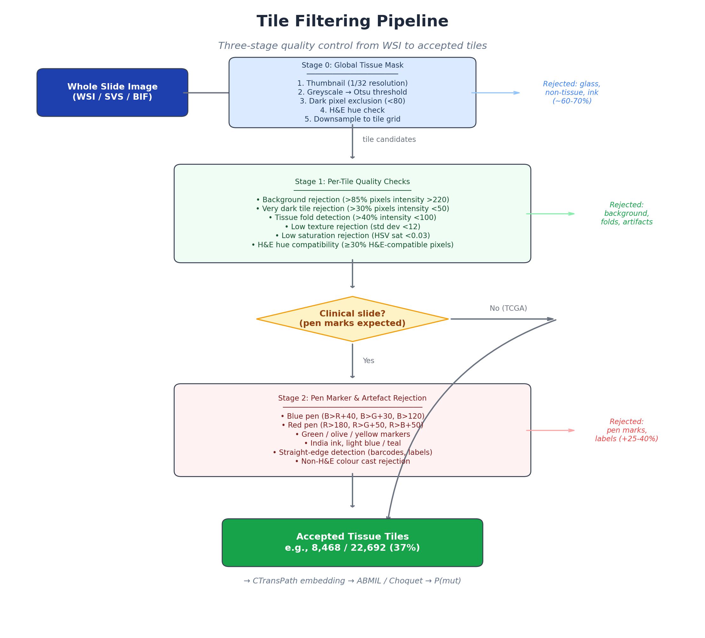
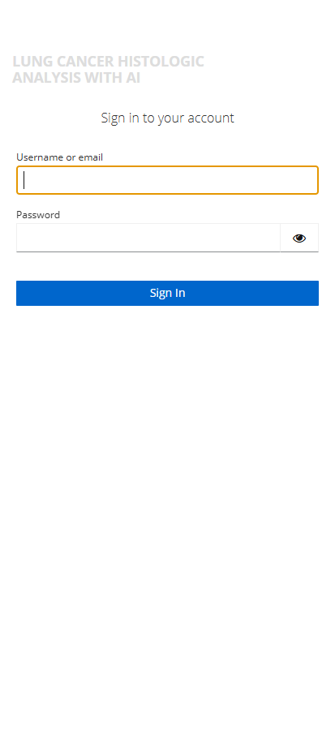
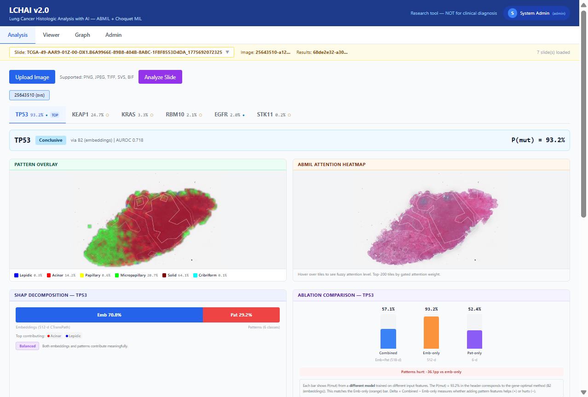
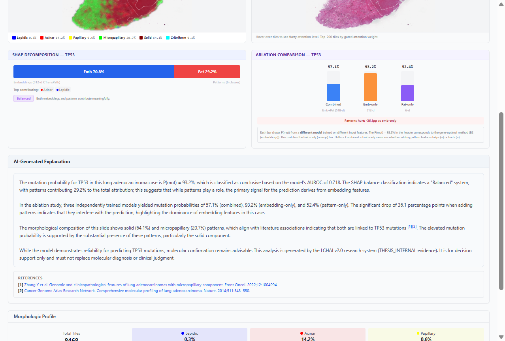
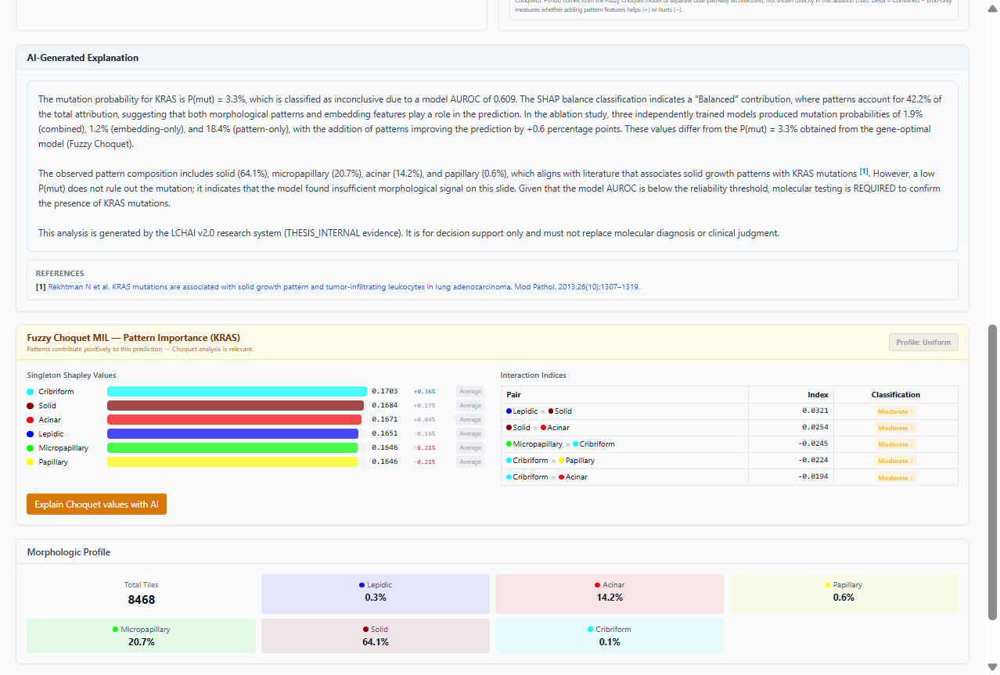
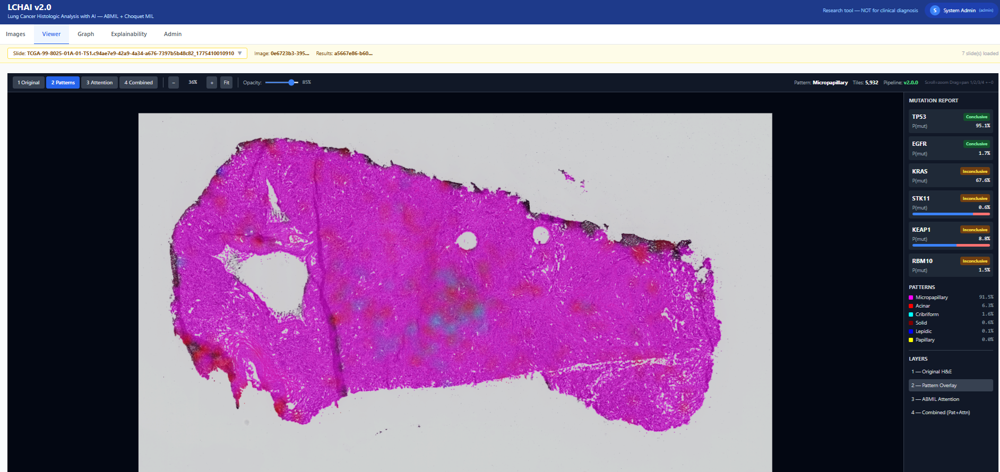
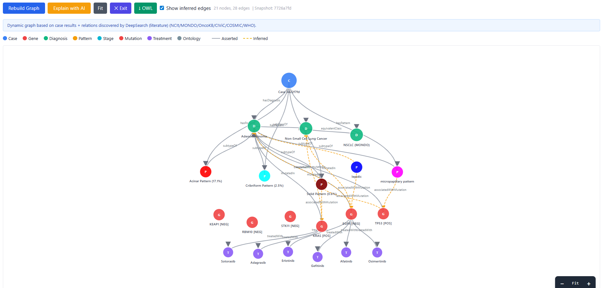
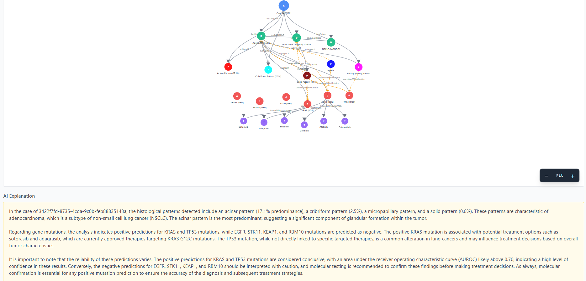
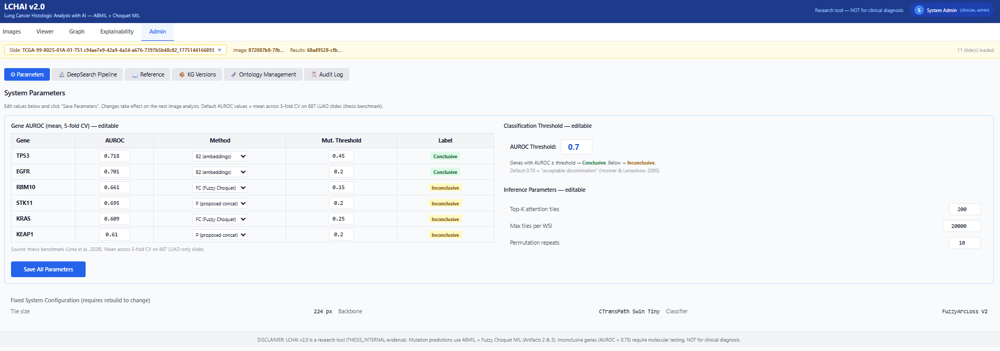
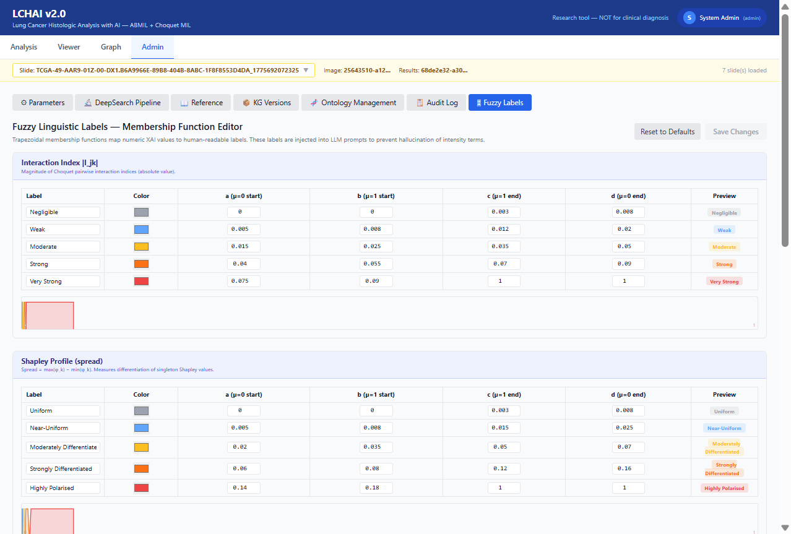

Lung Cancer Histologic Analysis with AI Explainable mutation prediction from H&E whole-slide images
DISCLAIMER: LCHAI v2.0 is a research tool (THESIS_INTERNAL evidence). Mutation predictions use ABMIL + Fuzzy Choquet MIL. Inconclusive genes (AUROC < 0.70) require molecular testing. NOT for clinical diagnosis.
LCHAI v2.0 is an AI-powered decision-support system for lung adenocarcinoma (LUAD) histopathology. It analyzes whole-slide images (WSI) to:

Figure 1: Three-stage tile filtering pipeline from WSI to accepted tissue tilesNavigate to the LCHAI system (https://lchai.gptfy.biz or
http://localhost:3000). You will be redirected to the
Keycloak authentication page.

Figure 2: Keycloak login screen| Method | Description |
|---|---|
| Username / Password | Enter your assigned credentials (e.g., admin1 /
admin1) |
| Click “Google” to sign in with your Google account (OAuth2) |
| Role | Access |
|---|---|
| Clinician | Analysis, Viewer, Graph tabs |
| Admin | All clinician access + Admin tab |
| Auditor | Read-only access to audit trail |
The Analysis tab is the primary workspace. It integrates image upload, mutation prediction, and multi-level explainability into a single unified view.

Figure 3: Analysis tab showing TP53 (93.2%, Conclusive). Gene sub-tabs at top, side-by-side overlays, SHAP with fuzzy label, and ablation comparison.Slide Selector: The yellow bar at the top shows all uploaded slides. Click the dropdown to switch.
| Stage | Description | Time |
|---|---|---|
| Decoding image | Opens WSI, creates thumbnail | 5-10s |
| CTransPath inference | GPU processes tiles | 10-30s |
| Mutation prediction | ABMIL/Choquet for 6 genes | 5-10s |
| Ablation + permutation | Model comparison | 10-20s |
| SHAP decomposition | Feature attribution | 5-15s |
| Saving results | Store in database | 2-5s |
Click “Cancel and discard” to abort at any time.
After processing, gene sub-tabs appear sorted by descending P(mut). The highest-probability mutation is selected by default.
Each tab shows: - Gene name, P(mut) percentage, and prediction method - A filled circle (●) for Conclusive genes, empty circle (○) for Inconclusive - A “TOP” badge on the highest-probability gene
Two images are displayed side by side:
| Left: Pattern Overlay | Right: ABMIL Attention Heatmap |
|---|---|
| Tile-level color map of 6 growth patterns | Top-200 tiles by gated attention weight |
| Legend shows pattern names with composition % | Red = high attention |
| Hover: shows tile pattern name and % | Hover: shows fuzzy attention label (e.g., “High Attention, p97”) |
Pattern Color Legend:
| Color | Pattern |
|---|---|
| Blue | Lepidic |
| Red | Acinar |
| Yellow | Papillary |
| Green | Micropapillary |
| Dark red | Solid |
| Cyan | Cribriform |
A stacked bar shows what percentage of the prediction comes from: - Embeddings (512-d CTransPath visual texture) — blue - Patterns (6-class histological classification) — red
A fuzzy linguistic label classifies the balance:
| Label | Meaning |
|---|---|
| Embedding-Dominated | Patterns nearly irrelevant (<10%) |
| Embedding-Led | Patterns provide minor signal (10-25%) |
| Balanced | Both contribute meaningfully (25-55%) |
| Pattern-Led | Patterns are primary signal (55-70%) |
| Pattern-Dominated | Embeddings secondary (>70%) |
Three vertical bars compare P(mut) from three independently trained models: - Combined (blue): embeddings + patterns (518-d) - Emb-only (orange): embeddings alone (512-d) - Pat-only (purple): patterns alone (6-d)
A delta indicator shows whether patterns help (+) or hurt (-).
Important: These are three different models, not components of one prediction. The P(mut) in the header comes from the gene-optimal method, which may differ from any bar.

Figure 4: AI-generated explanation with SHAP fuzzy label, ablation interpretation, literature citations [1][2], and PubMed referencesThe system generates a structured clinical narrative (8-12 sentences) that: - States P(mut) and whether it is conclusive or inconclusive - Describes the SHAP balance using the system’s fuzzy label - Interprets the ablation comparison - Compares the slide’s patterns to literature expectations with numbered PubMed citations [1], [2] - Includes the thesis disclaimer
All fuzzy labels and clinical facts are system-controlled — the LLM cannot invent intensity terms or clinical associations.
References: Below the explanation, clickable PubMed links for each cited paper.

Figure 5: Choquet section for KRAS with “Profile: Uniform” badge, per-pattern Shapley labels, and interaction indices with fuzzy classificationsThis section appears only when patterns contribute positively (Combined > Emb-only).
| Component | Description |
|---|---|
| Profile badge | Fuzzy classification of Shapley spread (e.g., “Uniform”, “Near-Uniform”) |
| Shapley value bars | Per-pattern importance with individual fuzzy labels (e.g., “Average”) |
| Interaction indices table | Pairwise synergy/redundancy with fuzzy intensity (e.g., “Moderate Synergy ↑”) |
| Explain with AI button | LLM interpretation using the system-computed fuzzy labels |
Grid showing total tile count and percentage breakdown of all 6 histological patterns.
The Viewer tab provides an interactive image viewer with zoom, pan, and overlay layers.

Figure 6: Viewer tab with pattern overlay layer| Button | Layer | Description |
|---|---|---|
| 1 Original | H&E image | The original histopathology image |
| 2 Patterns | Pattern overlay | Color-coded pattern classification per tile |
| 3 Attention | ABMIL attention | Heatmap with white contour lines |
| 4 Combined | Both | Pattern colors + attention contours |
| Action | How |
|---|---|
| Zoom in/out | Scroll wheel or +/- keys |
| Pan | Click and drag |
| Reset view | Click “Fit” or press 0 |
| Switch layers | Press 1, 2, 3,
4 |
On Pattern and Combined layers, hovering over a tile shows the pattern name with a color indicator.
In Pattern/Combined layers, click “Correction Mode” to: 1. Draw a lasso around misclassified tiles 2. Select the correct pattern from the dropdown 3. Submit corrections for delta retraining

Figure 7: Knowledge graph linking patterns, genes, treatments, and ontology conceptsClick “Rebuild Graph” to generate a case-specific knowledge graph from: - Predicted mutations and patterns - NCIt and MONDO ontology relationships - Treatment associations (OncoKB/FDA guidelines) - DeepSearch-discovered literature relations
Click “Explain with AI” to generate a natural language summary in your selected language.

Figure 8: LLM-generated graph explanationAccessible only to users with the admin role. Contains seven sub-tabs:

Figure 9: System parameters — AUROC values, methods, thresholds| Parameter | Description | Default |
|---|---|---|
| Gene AUROC values | Mean 5-fold CV AUROC per gene | 0.609–0.718 |
| Method per gene | Optimal model (B2, P, or FC) | From thesis Finding 2 |
| AUROC Threshold | Conclusive/Inconclusive boundary | 0.700 |
| Max tiles per WSI | Tile extraction limit | 20,000 |

Figure 10: Fuzzy linguistic label editor with trapezoidal membership functionsEdit the five fuzzy scales that classify XAI outputs: 1. Interaction Index — Negligible to Very Strong 2. Shapley Profile — Uniform to Highly Polarised 3. SHAP Balance — Embedding-Dominated to Pattern-Dominated 4. Shapley Individual — Average to Strongly Above 5. ABMIL Attention Level — Very Low to Very High
Each scale shows editable trapezoidal parameters [a, b, c, d] with real-time SVG preview. Changes take effect immediately in the Analysis tab.
| Sub-tab | Purpose |
|---|---|
| DeepSearch Pipeline | Automated literature search for new gene-pattern-treatment relations |
| Reference | Clinical reference tables and method formulas |
| KG Versions | Knowledge graph snapshot management |
| Ontology Management | NCIt/MONDO ontology update proposals |
| Audit Log | System event history with user, case, action, timestamp |
Click your name in the top-right corner to access:
| Format | Extension | Notes |
|---|---|---|
| SVS | .svs |
Recommended. Fastest via OpenSlide |
| TIFF | .tif, .tiff |
Flat TIFFs auto-converted to pyramidal |
| BIF | .bif |
Ventana/Roche. Auto-converted via pyvips |
| PNG | .png |
For small sections |
| JPEG | .jpg, .jpeg |
For small sections |
| P(mut) | Interpretation |
|---|---|
| > 70% | Strong evidence — confirm with molecular testing |
| 50-70% | Moderate evidence — molecular testing recommended |
| 30-50% | Weak signal — molecular testing needed |
| < 30% | Likely wild-type |
| Gene | Pattern association | Treatment implications |
|---|---|---|
| TP53 | Solid, micropapillary | No targeted therapy; immunotherapy in selected cases |
| EGFR | Lepidic, papillary | Osimertinib, erlotinib, gefitinib, afatinib |
| KRAS | Solid (mucinous not in taxonomy) | Sotorasib, adagrasib (G12C-specific) |
| STK11 | Variable (immune-cold) | May predict IO resistance |
| KEAP1 | Diffuse | NRF2 pathway; affects IO response |
| RBM10 | Variable | No targeted therapy; splicing biology |
LCHAI uses trapezoidal fuzzy membership functions to classify numeric XAI outputs into human-readable intensity terms. These labels are:
| Scale | Input | Labels |
|---|---|---|
| SHAP Balance | Pattern contribution % | Emb-Dominated → Emb-Led → Balanced → Pat-Led → Pat-Dominated |
| Shapley Profile | Spread (max-min) | Uniform → Near-Uniform → Mod. Diff. → Strongly Diff. → Polarised |
| Shapley Individual | % deviation from uniform | Average → Slightly → Moderately → Strongly Above/Below |
| Interaction Index | |I_jk| | Negligible → Weak → Moderate → Strong → Very Strong |
| Attention Level | Tile percentile | Very Low → Low → Moderate → High → Very High |
The fuzzy labels create a dual anti-hallucination mechanism: 1. Knowledge Graph constrains what the LLM says (clinical facts with PMID provenance) 2. Fuzzy labels constrain how it says it (intensity terms computed deterministically)
This ensures the AI explanation matches exactly what is displayed in the interface.
| Problem | Solution |
|---|---|
| Blank screen after login | Refresh (F5) or clear browser cache |
| Upload stuck at 0% | Check internet connection |
| Processing too slow | Normal ~1min GPU, ~5min CPU. Check Admin > Max tiles |
| No results after processing | Select the correct slide in the dropdown |
| BIF file fails | Large BIFs auto-convert. Check worker logs |
| Admin tab not visible | Requires admin role |
| Explanation in wrong language | Change in user menu (top-right) |
| Attention hover not showing labels | Slide needs re-processing with current pipeline |
| Choquet section not appearing | Only shows when patterns help (Combined > Emb-only) |
LCHAI v2.0 — Servio Fernando Lima Reina, PhD Computer Science, University of Fribourg, Switzerland For research use only. Always confirm AI predictions with molecular testing.